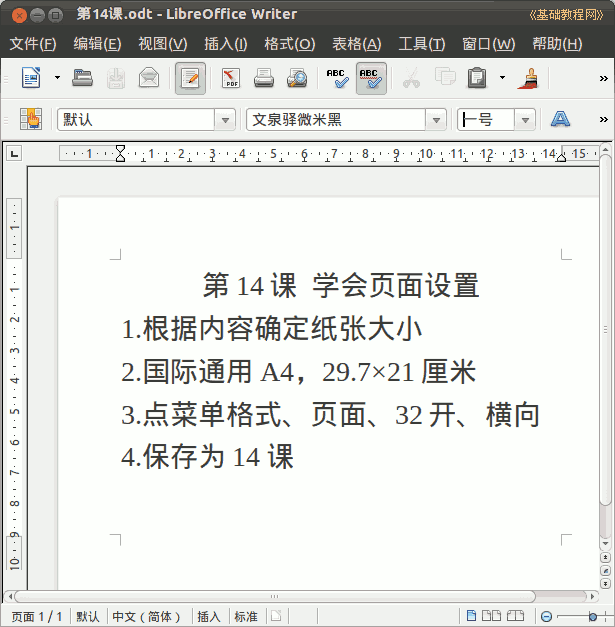

2011-2012 第二学期七年级文字处理和网页教学设计
作者：TeliuTe 来源：基础教程网
十四、学会页面设置 返回目录 下一课
（一）教学设计
1、学习目标：学会设置页面
2、注意事项：这节的后面要经常用
3、教学过程：
1）教师准备学案和板书；
2）学生整队进入，开机抄黑板上笔记；
3）教师讲解板书演示操作；
4）学生打指法、日志、完成操作；
5）教师打勾记录学生指法成绩，检查日志和操作；
注：学生抄完笔记就开始打指法、日志，老师讲完后再继续完成；
（二）板书设计(学生笔记)
第14课 学会页面设置
1. 根据内容确定纸张大小
2. 国际通用 A4，29.7×21厘米
3. 点菜单 格式、页面、32开、横向
4. 保存为第14课
操作图示：

（三）课后记
今天补前两天的课，去植树了
这样周六和周日上课，连着上课也麻烦
--
内容设计了一条，页面设置
把纸张大小讲一下，这样下回就可以使用了
--
还有背景底纹的内容，根据轻重缓急选择一个
内容多少要构思一下，这内容有些少了
--
语气和语音得多练习，成熟些比较好
讲解的时候干净利索，有效性和有趣
--
不用进来太早，这样后面时间多了会
也容易形成每节都早来，就是在门口吵些
--
日志写一条学会的知识，再写一个收获的
把方法学会了，自己添加内容
--
有个学生把光驱托盘忘记推回去，走的时候卡住
这次每个班都要求一下，交2元上来
--
没什么难度，乘号有的打不出来，
Shift+8，sunpinyin里出不来，得用fcitx的
--
直接点输入法图标可以切换
但是点第一个会关闭输入法
--
返回目录 下一课
本教程由86团学校TeliuTe制作|著作权所有
基础教程网：http://teliute.org/
美丽的校园……
转载和引用本站内容，请保留版权信息和本站链接。